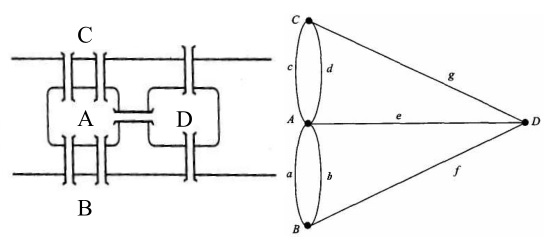
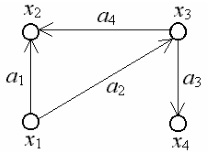
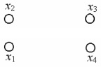
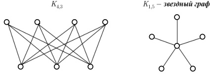

Определение 1.
Графом G (V, E) называется совокупность двух множеств – непустого множества
V (множества вершин) и множества Е его двухэлементных подмножеств множества V (Е – множество ребер).
G (V, E) = (E; V) , V ≠ ∅ , E ⊂ 2V
Определение 2.
Граф – это математический объект, состоящий из множества вершин X = {x1 , x2, ..., xn} и множества ребер A = {a1 , a2 ,..., an }.
Таким образом, граф полностью определяется совокупностью множеств X, A: G = (X, A).
Определение 3.
Графом называется алгебраическая система G = (M; R), где R – двухместный предикатный символ.
Элементы носителя М называются вершинами графа G, а элементы бинарного отношения R & М2 – дугами.
Таким образом, дугами являются пары вершин (а, b) & R. При этом дуга (а, b) называется исходящей из вершины а и заходящей в вершину b.
Для многих задач несущественно, являются ли ребра отрезками прямых или криволинейными дугами;
важно лишь то, какие вершины соединяет каждое ребро.
Существуют два основных вида графов (и множество их подвидов): ориентированные и неориентированные.
Если ребрам графа приданы направления от одной вершины к другой, то такой граф называется ориентированным (или орграфом).
Ребра ориентированного графа называются дугами. Cоответствующие вершины ориентированного графа называют началом и концом.
Если направления ребер не указываются, то граф называется неориентированным (или просто графом).
Теория графов многократно переоткрывалась разными авторами при решении различных прикладных задач.
Например, задача о Кёнигсбергских мостах.
На рис. 1 представлен схематический план центральной части города Кенигсберг (ныне Калининград),
включающий два берега реки Преголи, два острова в ней и семь соединяющих их мостов.
Задача состоит в том, чтобы обойти все четыре части суши, пройдя по каждому мосту один раз, и вернуться в исходную точку.
Эта задача была решена (показано, что решения не существует) Эйлером в 1736 году.

Рис. 1. Схематический план города и его представление в виде графа
Пример 1.
На рис. 2 изображен неориентированный граф G = (X, A).
X = {x1 , x2 , x3 , x4}, A = {a1 = (x1, x2), a2 =(x2, x3), a3 =(x1, x3), a4 = (x3, x4)}.

Рис. 2 – Пример 1
Пример 2.
На рис. 3 изображен ориентированный граф G = (X, A).
X = {x1, x2, x3, x4}, A = {a1 = (x1, x2), a2 = (x1, x3), a3 = (x3, x4), a4 = (x3, x2)}.

Рис. 3 – Пример 2
Граф называется простым, если каждую пару вершин соединяет не более чем одно ребро.
Граф, имеющий как ориентированные, так и неориентированные ребра, называется смешанным.
Различные ребра могут соединять одну и ту же пару вершин. Такие ребра называют кратными.
Граф, содержащий кратные ребра, называется мультиграфом.
Неориентированное ребро графа эквивалентно двум противоположно направленным дугам, соединяющим те же самые вершины.
Ребро может соединять вершину саму с собой. Такое ребро называется петлей.
Граф с кратными ребрами и петлями называется псевдографом.
Множество ребер графа может быть пустым.
Множество вершин графа не может быть пустым.
Пример 3.
На рис. 4. изображен ориентированный граф G = (X, A).
X = {x1, x2, x3, x4}, A = ∅ .

Рис. 4 – Пример 3
Как в случае ориентированного, так и в случае неориентированного ребра говорят, что вершины x и y инцидентны ребру a,
если эти вершины соединены a.
Две вершины называются смежными, если они инцидентны одному и тому же ребру.
Два ребра называются смежными, если они имеют общую вершину.
Степенью вершины графа называется число ребер, инцидентных этой вершине.
Вершина, имеющая степень 0, называется изолированной, а степень 1 – висячей.
Подграфом графа G называется граф, все вершины и ребра которого содержатся среди вершин и ребер графа G.
Подграф называется собственным, если он отличен от самого графа.
Граф G = (X, A) – полный, если для любой пары вершин xi и xj существует ребро (xi, xj).
Граф G = (X, A) – симметрический, если для любой дуги (xi, xj ) существует противоположно ориентированная дуга (xj, xi).
Граф G = (X, A) – планарный, если он может быть изображен на плоскости так, что не будет пересекающихся дуг.
Неориентированный граф G = (X, A) – двудольный, если множество его вершин X можно разбить на два подмножества X1 и X2,
что каждое ребро имеет один конец в X1 , а другой в X2.

Рис. 5 – Двудольные графы
Заметим, что граф Кm,n имеет ровно m + n вершин и m*n ребер.